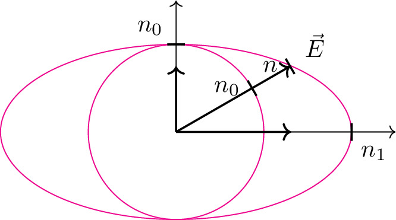

pre.tex
\documentclass[tikz]{standalone}\input{pre.tex}\begin{document}\begin{tikzpicture}[scale=1.25]
\xdef\a{2}
\xdef\b{1}
\xdef\angle{45}
\pgfmathsetmacro{\e}{sqrt(1-\b^2/\a^2)}%
\pgfmathsetmacro{\p}{\b^2/\a)}%
\pgfmathsetmacro{\c}{sqrt(\a^2-\b^2)}%
% \draw[dashed, black!40] (1.311,0) -- ++(0,0.76);
%
% \draw[black, thick] (1.31,-.1) node[below,xshift=0.35em] {$n_{ellipse}$} -- ++(0,0.2);
% \draw[dashed, black!40] (30:1) -- ++(-{cos(30)},0);
% \draw[thin,samples=200,domain=0:360,smooth,variable=\x,magenta] plot ({\a*sin(\x)},{\b*cos(\x)});
\draw[thin,samples=200,domain=0:360,smooth,variable=\x,magenta] plot ({\b*sin(\x)},{\b*cos(\x)});
\draw[thin,samples=200,domain=0:360,smooth, xshift=-{\c}cm,variable=\phi,magenta]%
plot ({\phi}:{\p/(1-\e*cos(\phi))});
\begin{scope}[rotate around={30:(0,0)}]
\draw[black,->, thick] (0,0) -- (1.5,0) node[above, xshift=1em] {$\vec{E}$};
\draw[black, thick] (1,-0.1) node[left, xshift=-0.3em, yshift=0.3em] {$n_0$} -- ++(0,0.2);
\draw[black, thick] (1.5,-0.1) node[left, xshift=-0.3em, yshift=0.3em] {$n$} -- ++(0,0.2);
\end{scope}
% \draw
\draw[black,->, thin] (0,0) -- (2.5,0);% node [right] {$+y$};
\draw[black,->, thin] (0,0) -- (0,1.5);% node [above] {$+x$};
% \draw[blue,->,thick] (0,0) -- (30:1.50)
% node [above, black] {$n,$}
% node [above right] {$\vec{E}$};
\draw[black,->,thick] (0,0) -- ++(1.31,0);
\draw[black,->,thick] (0,0) -- ($(30:1.5)+(-{1.5*cos(30)},0)$);
\draw[black,thick] (2,-.1) node[right,yshift=-0.5em] {$n_1$} -- ++(0,0.2);
\draw[black, thick] (-.1,1) node[above, xshift=-0.7em] {$n_0$} -- ++(0.2,0);
% \draw[->, thick] (0,0) -- ++({\a*sin(45)},{\b*cos(45)}) coordinate (o) node [above, xshift=1em] {$\vec{E}$};
% \draw[->, thick] (0,0) -- ++(45:2) coordinate (o) node [above, xshift=1em] {$\vec{E}$};
% \draw[->, thick] (0,0) -- ++({\a*sin(0)},{cos(45)}) node [left, xshift=0em] {$\vec{E}_1$};
% \draw[dashed]
% ({\a*sin(0)},{cos(45)}) --
% (o);
% \draw[dashed]
% ({\a*sin(45)},{cos(90)}) --
% (o);
% \draw[->, thick] (0,0) -- ++({\a*sin(45)},{cos(90)}) node [below, xshift=-0.2em] {$\vec{E}_2$};
% \draw (2,0) -- ++(0,2);
% \foreach \i in {0.9,0.95,...,1.1}{
% \draw[magenta,->] (-1,\i) -- ++ (4,0);
% };
% \foreach \i in {0.9,0.95,...,1.1}{
% \draw[magenta] (0,\i) -- ++ (2,\i+0.5cm);
% };
% \foreach \i in {0.9,0.95,...,1.1}{
% \draw[magenta,->] (2,{\i+0.535})-- ++(1,0);
% };
% % \draw[magenta,->]
% % \coordinate (b) at (1,1.1);
% % \coordinate (a) at (2,1.1);
% % \coordinate (c) at (2,2.1);
% % \draw (c) pic["$\alpha$", draw=orange, <->, angle eccentricity=1.2, angle radius=1cm]
% % {angle=a--b--c};
\end{tikzpicture}\end{document}